|
|
|
|
|
|
|
|
The following instructions provide two different methods of setting up the current access right for the user:
PLC Key
Script (User name and password)
There are a multitude of other ways you can define the current User access right; however, do not use a data input where the user simply types the number of their access right.
When you add a new access group, the RecipeControlDefault structure variable is created. Use this variable to control the current User access right.
Expand the RecipeControlDefault variable to view its elements.
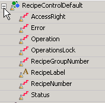
Select the AccessRight variable element and define the Read From Variable or Write To Variable.
Use these variables to define the device address with the access right of the current user. Use Read From when the User access right is defined on the equipment and needs to be copied into the AccessRight variable. Use Write To when the User access right is defined on the target machine and needs to be copied from the AccessRight variable to the equipment.
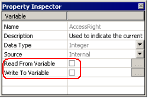
There are various ways you can set up the User access right, such as the ladder program, combinations of switches, or secure panel interfaces. This topic describes two methods: PLC key and scripts.
If your equipment uses a key to control user access, you can use the key to define the current User access right. Connect the I/O lines from the lock to control the bit values in the device address associated with the Recipe Control Group's AccessRight variable.
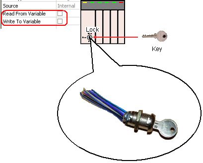
The above Lock has three settings: Run, Monitor, and Program. Setup the lock so that different bits in the device address turn on depending on the current setting.
Use the Lock to set the User access right as shown.
|
Setting |
Access Right |
in binary format |
Description |
|
Run |
0 |
0000 0000 0000 0000 |
Operation Level - Enables normal panel operations |
|
Monitor |
1 |
0000 0000 0000 0001 |
Supervisory Level - Some security: hides recipes from panel operator and prevents operator from running recipe operations |
|
Program |
3 |
0000 0000 0000 0011 |
Programming Level - Security: hides secret recipe information from panel operators and supervisors |
For each Recipe Group and Recipe, assign the appropriate access right.
Any Recipe Groups or Recipes with an access right of 0 will be visible to the panel operator.
To add security, the minimum access right should be 1.
If you want to hide secret recipes from supervisors who have a key that can change the PLC to the Monitor setting, assign an access right of 3 to the Recipe or Recipe Group. Only approved maintenance staff are provided with a key to change the PLC to the Program setting.
If you want to implement user names and passwords, you can do so by using scripts. The following is only an example of how you can use scripts to set up user name and password security. You can devise other methods if you want. The administrator user name and password are fixed in this script. You can change them to suit your needs.
To be able to define user names and passwords as runtime, you can set up a panel that only administrators can use to define user names, passwords, and access rights. The initial panel should be a login screen that forces users to enter their user name and password, which directs them to either the initial panel or to the system administration panel.
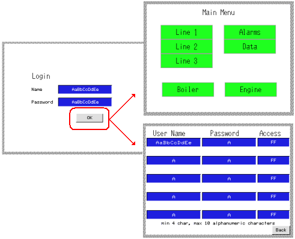
Create the following variables and parts to implement the user login and password setup panels.
|
Name |
Description |
|
PasswordLogin |
Internal string variable records the name and password entered by the user. |
|
UserLogin |
|
|
Password |
Internal string array variables with 5 elements (five users). |
|
Username |
|
|
UserAccess |
Internal integer array with 5 elements. |
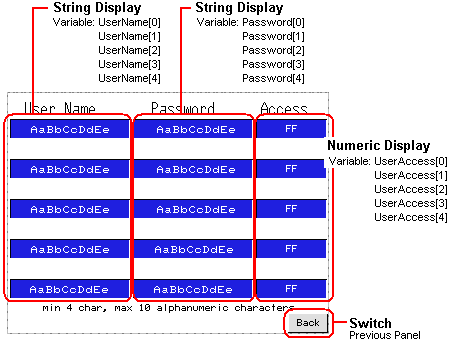
Create a panel and assign a PanelID of 8999.
On the panel, create String Displays for the user names and passwords.
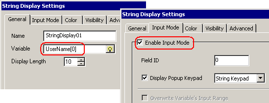
Each String Display should be set to a different element in the UserName or Password string array variable. Enable Input Mode so the system administrator can define the user name and password.
Create Numeric Displays for defining the access right for the corresponding user.
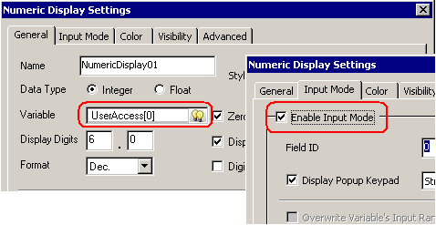
Each Numeric Display should be set to a different element in the Access integer array variable. Enable Input Mode so the system administrator can define the access right value.
Create a switch to exit the panel and return to the initial login panel.
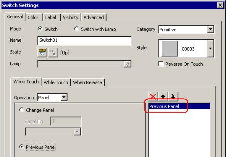
Set up the Login Panel. Use this as the initial panel in your system so operators identify themselves before they begin.
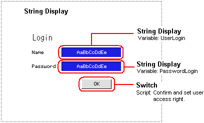
Create a panel and assign a PanelID of 1.
Use String Displays so the panel operator can input their name and password.
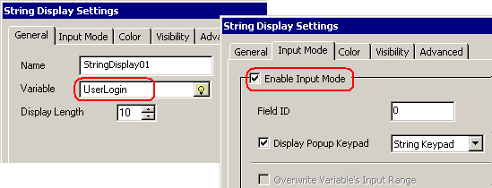
Create a switch with the following script.
String user, login,
SystemAdminName = "Admin",
SystemAdminPassword = "abcdefghij";
int MainMenuPanel = 10, UserPasswordPanel = 8999;
// 1. Get entered user name and password then reset
user = UserLogin.getStringValue();
login = PasswordLogin.getStringValue();
UserLogin.write("");
PasswordLogin.write("");
// 2. If either user or password is empty exit script
if (user.length() == 0)
return;
if (login.length() == 0)
return;
// 3. Check login user name/password with
// registered passwords and users
for (int i = 0; i < 5; i++)
{
String user1, login1;
user1 = UserName[i].getStringValue();
if (user1.equals(user))
{
login1 = Password[i].getStringValue();
if (login1.equals(login))
{
// 4. Matching user name and password
int ar = UserAccess[i].getIntValue();
_RecipeControlDefault.AccessRight.write(ar);
_CurPanelID.write(MainMenuPanel);
return;
}
}
}
// 5. Check for System Administrator
if (SystemAdminName.equals(user))
{
if (SystemAdminPassword.equals(login))
{
_CurPanelID.write(UserPasswordPanel);
}
}
1. Get entered user name and password
Copy into local variables the user name and password entered into the String Display parts on the panel. The script compares these values with the registered user names and passwords.
Reset the user name and password fields.
2. If either user or password is empty exit script
The script exits if nothing has been entered as the user or password name.
3. Check login user name/password with registered passwords and users
The script compares the login user name and password with the list of registered user names and passwords.
4. Matching user name and password
If the login user name and password matches one of the accepted user names and passwords, the user's access right is assigned to the recipe control's AccessRight variable, then continues to the Main Menu. Recipe operations are accepted or denied depending on the value in the AccessRight variable.
5. Check for System Administrator
If the login user name and password doesn't match any registered user names and passwords, check if it's the administrator. If administrator, then go to the user name and password administration panel.

If you want to save user names and passwords so they're available when the target machine is powered down then up again, then they should be saved to equipment.
In this example, the Main Menu (Panel ID:10) is the actual start point for panel operations. Although the Login panel is the initial panel, it's only purpose is to identify the user and the user access right. And the User/Password/Access Right panel is used only to define users, passwords, and access rights.
The system administrator should first login and enter Admin as the user name and abcdefghij for the password (or name and password you defined in the script), then touch the OK button.
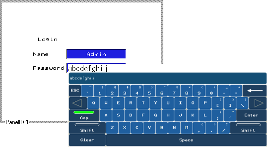
Define the users, passwords and their access right then touch Back to return to the Login panel.
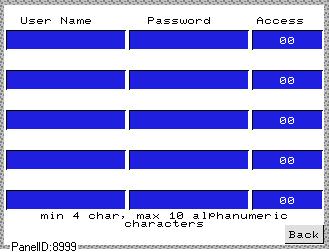
Once users and passwords are set up, the user can log in and begin operations from the main menu.
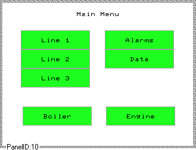
When the user runs recipe operations, the value in the AccessRight control variable, which stores the current logged in user's Access, is checked against the Recipe Access Right and access is accepted or denied.